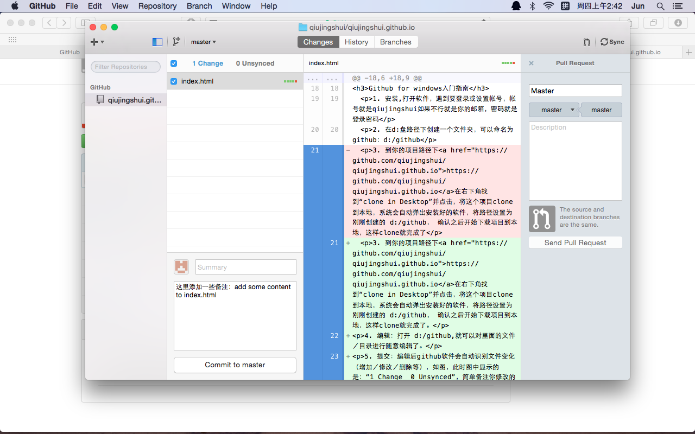
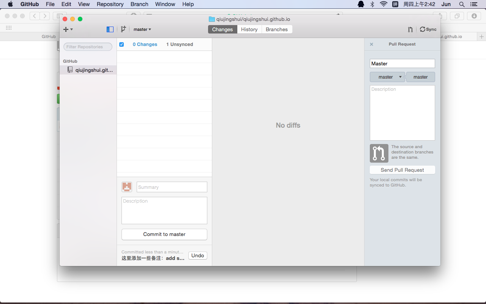

欢迎访问我的主页：我是逗比
还可以访问我的文章列表：
# 如何成为一个逗比 # 让我告诉你什么才是真正的逗比 # 十个原因告诉你：你为何没我逗1. 安装,打开软件，遇到要登录或设置帐号，帐号就是qiujingshui如果不行就是你的邮箱，密码就是登录密码
2. 在d:盘路径下创建一个文件夹，可以命名为github：d:/github
3. 到你的项目路径下https://github.com/qiujingshui/qiujingshui.github.io在右下角找到“clone in Desktop”并点击，将这个项目clone到本地，系统会自动弹出安装好的软件，将路径设置为刚刚创建的 d:/github， 确认之后开始下载项目到本地，这样clone就完成了。
4. 编辑：打开 d:/github,就可以对里面的文件／目录进行随意编辑了。
5. 提交：编辑后github软件会自动识别文件变化（增加／修改／删除等），如图，此时图中显示的是：“1 Change 0 Unsynced”，简单备注你修改的内容，然后点击“Commit to master”提交
6. 同步：如图，提交完成后状态变成“0 Change 1 Unsynced”，还需要将改变同步到服务器端。点击右上角的“Sync”就开始同步了，这样就完成了网页的修改啦！
好忧桑